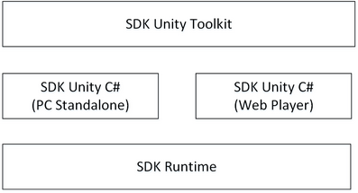

SDK Unity Toolkit |
Top Previous Next |
|
The SDK Unity Toolkit is a set of scripts, prefabs and other utilities aimed to facilitate the use of Intel® RealSense™ technology when creating interactive Unity applications. The toolkit is presented as a Unity Editor extension. Many basic and advanced capabilities are available directly from the Unity’s Editor user interface (UI). Game developers and designers can use this toolkit to add interactions with minimal code writing. Advanced developers can also look at the SDK Unity C# scripting support, described in the main SDK Reference Manual. As illustrated in Figure 80, the SDK Unity Toolkit and the SDK Unity C# scripting supports are layers complement each other to enable Unity applications.  Figure 80: SDK Unity Support Layers To add the SDK features such as hand tracking and gesture detection to a game application, simply attach the provided Actions scripts (such as TrackingAction or RotateAction) to an existing game object in the scene. This Reference Manual assumes that you are familiar with the basics of the Unity Editor. Prerequisites The toolkit requires Unity v4.1.0 PRO (for the plugin capability), or higher.
|